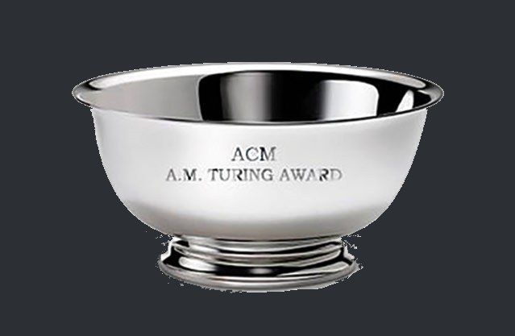

Algemene informatie

De Turing Award is de "Nobelprijs van de informatica", het prijs is vernoemd naar Alan Turing. Sinds 2007 wordt de Turing Awards gesponsord door Google en Intel. Je krijgt er ook een geldprijs van ongeveer 800.000 euro.
De prijs wordt gegeven aan iemand die een bijdrage heeft op de informaticagemeenschap. De bijdrage moet duurzaam zijn voor de computerwereld.
De eerste prijs werd uitgereikt in 1966.
In 2006 werd voor het eerst de prijs uitgereikt aan een vrouw Frances E. Allen.